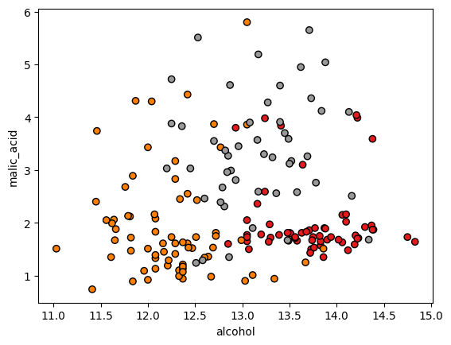
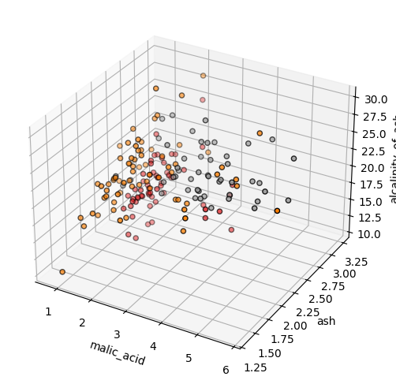
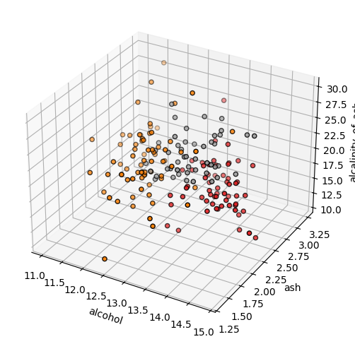

Random Forest Tree - Classification#
Installation of Packages#
First install packages like numpy, scikit-learn, matplotlib
!pip install numpy scikit-learn matplotlib graphviz pydotplus
Requirement already satisfied: numpy in /opt/hostedtoolcache/Python/3.10.14/x64/lib/python3.10/site-packages (2.0.0)
Requirement already satisfied: scikit-learn in /opt/hostedtoolcache/Python/3.10.14/x64/lib/python3.10/site-packages (1.5.0)
Requirement already satisfied: matplotlib in /opt/hostedtoolcache/Python/3.10.14/x64/lib/python3.10/site-packages (3.9.0)
Requirement already satisfied: graphviz in /opt/hostedtoolcache/Python/3.10.14/x64/lib/python3.10/site-packages (0.20.3)
Requirement already satisfied: pydotplus in /opt/hostedtoolcache/Python/3.10.14/x64/lib/python3.10/site-packages (2.0.2)
Requirement already satisfied: scipy>=1.6.0 in /opt/hostedtoolcache/Python/3.10.14/x64/lib/python3.10/site-packages (from scikit-learn) (1.13.1)
Requirement already satisfied: joblib>=1.2.0 in /opt/hostedtoolcache/Python/3.10.14/x64/lib/python3.10/site-packages (from scikit-learn) (1.4.2)
Requirement already satisfied: threadpoolctl>=3.1.0 in /opt/hostedtoolcache/Python/3.10.14/x64/lib/python3.10/site-packages (from scikit-learn) (3.5.0)
Requirement already satisfied: contourpy>=1.0.1 in /opt/hostedtoolcache/Python/3.10.14/x64/lib/python3.10/site-packages (from matplotlib) (1.2.1)
Requirement already satisfied: cycler>=0.10 in /opt/hostedtoolcache/Python/3.10.14/x64/lib/python3.10/site-packages (from matplotlib) (0.12.1)
Requirement already satisfied: fonttools>=4.22.0 in /opt/hostedtoolcache/Python/3.10.14/x64/lib/python3.10/site-packages (from matplotlib) (4.53.0)
Requirement already satisfied: kiwisolver>=1.3.1 in /opt/hostedtoolcache/Python/3.10.14/x64/lib/python3.10/site-packages (from matplotlib) (1.4.5)
Requirement already satisfied: packaging>=20.0 in /opt/hostedtoolcache/Python/3.10.14/x64/lib/python3.10/site-packages (from matplotlib) (24.1)
Requirement already satisfied: pillow>=8 in /opt/hostedtoolcache/Python/3.10.14/x64/lib/python3.10/site-packages (from matplotlib) (10.3.0)
Requirement already satisfied: pyparsing>=2.3.1 in /opt/hostedtoolcache/Python/3.10.14/x64/lib/python3.10/site-packages (from matplotlib) (3.1.2)
Requirement already satisfied: python-dateutil>=2.7 in /opt/hostedtoolcache/Python/3.10.14/x64/lib/python3.10/site-packages (from matplotlib) (2.9.0.post0)
Requirement already satisfied: six>=1.5 in /opt/hostedtoolcache/Python/3.10.14/x64/lib/python3.10/site-packages (from python-dateutil>=2.7->matplotlib) (1.16.0)
Importation of packages#
We import the necessary packages
import numpy as np
from sklearn.ensemble import RandomForestClassifier
from sklearn import datasets, metrics
from sklearn.model_selection import train_test_split
from sklearn.preprocessing import StandardScaler
import matplotlib.pyplot as plot
from sklearn.metrics import confusion_matrix, ConfusionMatrixDisplay
from sklearn import tree
import graphviz
import pydotplus
from IPython.display import Image, display
Load Dataset#
We load the necessary IRIS dataset.
wine = datasets.load_wine()
Description of the Dataset#
Input features#
wine.feature_names
['alcohol',
'malic_acid',
'ash',
'alcalinity_of_ash',
'magnesium',
'total_phenols',
'flavanoids',
'nonflavanoid_phenols',
'proanthocyanins',
'color_intensity',
'hue',
'od280/od315_of_diluted_wines',
'proline']
Target feature#
wine.target_names
array(['class_0', 'class_1', 'class_2'], dtype='<U7')
Verify number of records#
print(f"Number of Input Records: {len(wine.data)}")
print(f"Number of Target Records: {len(wine.target)}")
Number of Input Records: 178
Number of Target Records: 178
Visulizing the dataset#
x = wine.data
y = wine.target
plot.scatter(x[:, 0], x[:, 1], c=y, cmap=plot.cm.Set1, edgecolor="k")
plot.xlabel(wine.feature_names[0])
plot.ylabel(wine.feature_names[1])
plot.show()

plot.scatter(x[:, 2], x[:, 3], c=y, cmap=plot.cm.Set1, edgecolor="k")
plot.xlabel(wine.feature_names[2])
plot.ylabel(wine.feature_names[3])
plot.show()

fig = plot.figure(figsize=(6, 6))
ax = fig.add_subplot(projection="3d")
ax.scatter(x[:, 1], x[:, 2], x[:, 3], c=y, cmap=plot.cm.Set1, edgecolor="k")
ax.set_xlabel(wine.feature_names[1])
ax.set_ylabel(wine.feature_names[2])
ax.set_zlabel(wine.feature_names[3])
plot.show()

fig = plot.figure(figsize=(6, 6))
ax = fig.add_subplot(projection="3d")
ax.scatter(x[:, 0], x[:, 2], x[:, 3], c=y, cmap=plot.cm.Set1, edgecolor="k")
ax.set_xlabel(wine.feature_names[0])
ax.set_ylabel(wine.feature_names[2])
ax.set_zlabel(wine.feature_names[3])
plot.show()

Training#
x = wine.data
y = wine.target
x_train, x_test, y_train, y_test = train_test_split(
x, y, train_size=0.7, random_state=12, stratify=y
)
print(f"Number of Training Records (input): {len(x_train)}")
print(f"Number of Training Records (target): {len(y_train)}")
print(f"Number of Test Records (input): {len(x_test)}")
print(f"Number of Test Records (input): {len(x_test)}")
Number of Training Records (input): 124
Number of Training Records (target): 124
Number of Test Records (input): 54
Number of Test Records (input): 54
Standardization of features#
sc = StandardScaler()
sc.fit(x_train)
print(f"Mean: {sc.mean_} \nVariance={sc.var_}")
Mean: [1.30047581e+01 2.37379032e+00 2.35193548e+00 1.94088710e+01
9.95161290e+01 2.29951613e+00 2.00870968e+00 3.52903226e-01
1.58637097e+00 4.97782257e+00 9.67870968e-01 2.62653226e+00
7.34419355e+02]
Variance=[6.14365264e-01 1.36032838e+00 7.36639958e-02 1.13516149e+01
2.25798127e+02 3.83523959e-01 9.57067690e-01 1.61738293e-02
3.23856991e-01 5.47239437e+00 5.11881769e-02 4.75337168e-01
8.90159532e+04]
x_train_std = sc.transform(x_train)
x_test_std = sc.transform(x_test)
classifier = RandomForestClassifier(n_estimators=10, max_depth=2, random_state=0)
# training
classifier.fit(x_train_std, y_train)
RandomForestClassifier(max_depth=2, n_estimators=10, random_state=0)In a Jupyter environment, please rerun this cell to show the HTML representation or trust the notebook.
On GitHub, the HTML representation is unable to render, please try loading this page with nbviewer.org.
RandomForestClassifier(max_depth=2, n_estimators=10, random_state=0)
Classification report#
predicted_target = classifier.predict(x_test_std)
# classification report
print(metrics.classification_report(y_test, predicted_target))
precision recall f1-score support
0 1.00 1.00 1.00 18
1 0.91 1.00 0.95 21
2 1.00 0.87 0.93 15
accuracy 0.96 54
macro avg 0.97 0.96 0.96 54
weighted avg 0.97 0.96 0.96 54
Confusion matrix#
cm = confusion_matrix(y_test, predicted_target, normalize="pred")
disp = ConfusionMatrixDisplay(confusion_matrix=cm, display_labels=wine.target_names)
disp.plot(cmap=plot.cm.Blues)
<sklearn.metrics._plot.confusion_matrix.ConfusionMatrixDisplay at 0x7fd3c92f0580>
cm = confusion_matrix(y_test, predicted_target, normalize="true")
disp = ConfusionMatrixDisplay(confusion_matrix=cm, display_labels=wine.target_names)
disp.plot(cmap=plot.cm.Blues)
<sklearn.metrics._plot.confusion_matrix.ConfusionMatrixDisplay at 0x7fd3c92349a0>
Visulization of random forests#
for i in range(10):
dot_data = tree.export_graphviz(
classifier.estimators_[i],
out_file=None,
feature_names=wine.feature_names,
filled=True,
rounded=True,
class_names=wine.target_names,
)
graph = graphviz.Source(dot_data)
pydot_graph = pydotplus.graph_from_dot_data(dot_data)
img = Image(pydot_graph.create_png())
display(img)
---------------------------------------------------------------------------
InvocationException Traceback (most recent call last)
Cell In[20], line 12
10 graph = graphviz.Source(dot_data)
11 pydot_graph = pydotplus.graph_from_dot_data(dot_data)
---> 12 img = Image(pydot_graph.create_png())
13 display(img)
File /opt/hostedtoolcache/Python/3.10.14/x64/lib/python3.10/site-packages/pydotplus/graphviz.py:1797, in Dot.__init__.<locals>.<lambda>(f, prog)
1792 # Automatically creates all the methods enabling the creation
1793 # of output in any of the supported formats.
1794 for frmt in self.formats:
1795 self.__setattr__(
1796 'create_' + frmt,
-> 1797 lambda f=frmt, prog=self.prog: self.create(format=f, prog=prog)
1798 )
1799 f = self.__dict__['create_' + frmt]
1800 f.__doc__ = (
1801 '''Refer to the docstring accompanying the'''
1802 ''''create' method for more information.'''
1803 )
File /opt/hostedtoolcache/Python/3.10.14/x64/lib/python3.10/site-packages/pydotplus/graphviz.py:1959, in Dot.create(self, prog, format)
1957 self.progs = find_graphviz()
1958 if self.progs is None:
-> 1959 raise InvocationException(
1960 'GraphViz\'s executables not found')
1962 if prog not in self.progs:
1963 raise InvocationException(
1964 'GraphViz\'s executable "%s" not found' % prog)
InvocationException: GraphViz's executables not found